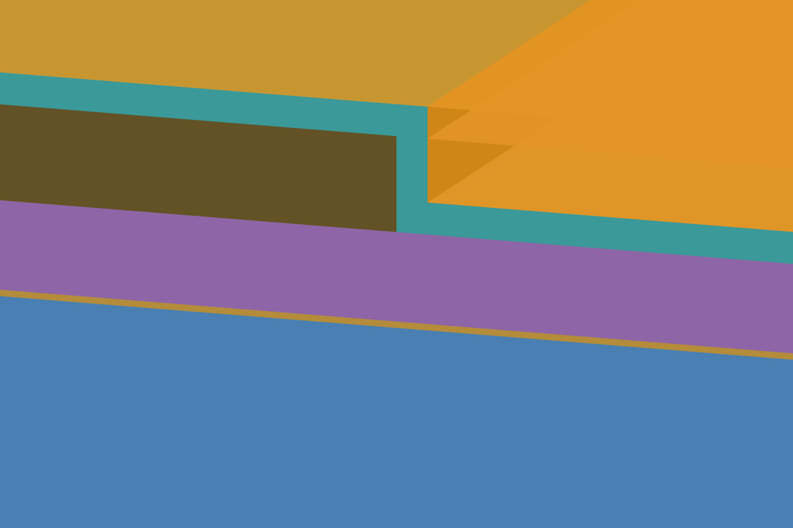
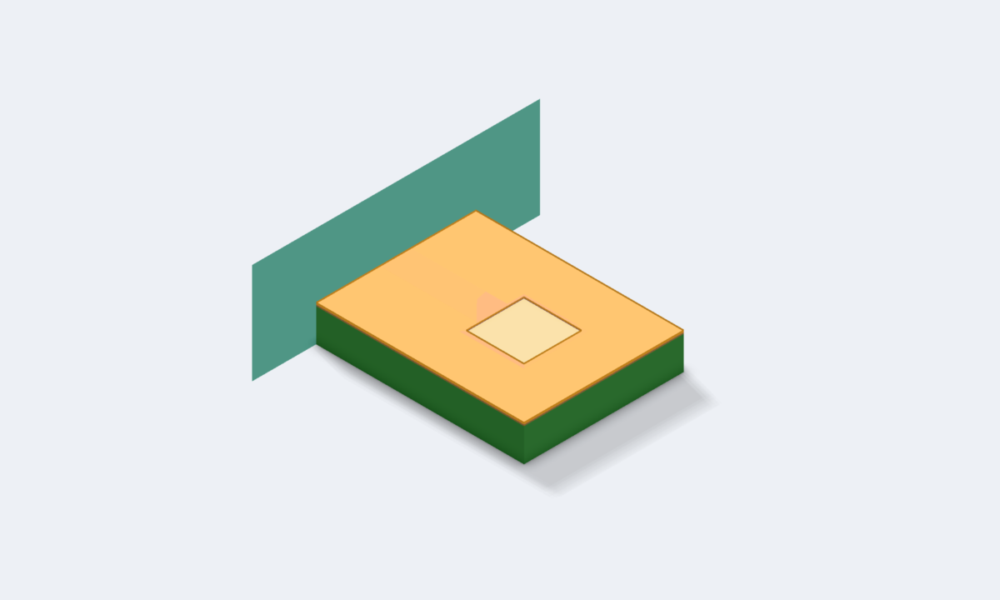
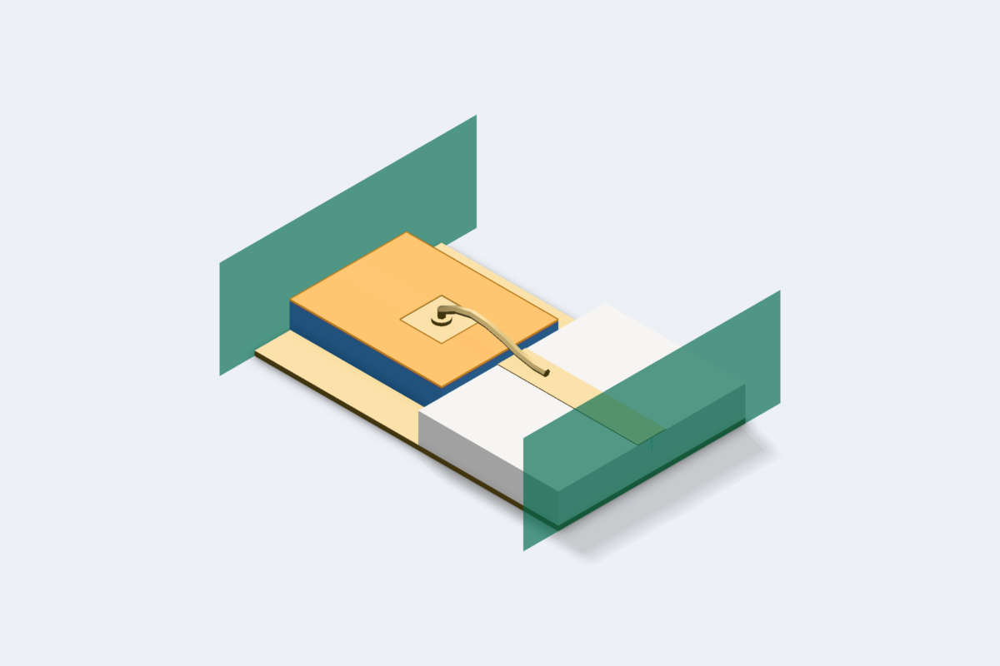
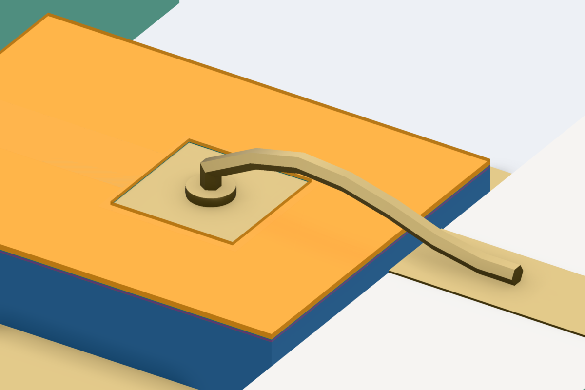

Passivated Pad
Two dielectrics over the top metal of a GaAs process, entered as the process states them: a line with and without them, a probe pad seen through an opening in both, in 3D and planar, and a through-silicon via that passes through the oxide and the silicon as one via.
File ▸ New ▸ Examples ▸ Passivated Pad copies this workspace to a folder you choose and opens it on this README. Every example is listed in Example Workspaces.
Run the numbered cells in order, top of the Workspace tree first. Each is one EM setup, and none reads another's result:
1a Bare Lineand1b Covered Line: the same Metal2 line, without and with the two covers.2 Probe Pad: a probe pad seen through an opening in the covers, in 3D (its 3D view) and in the planar solver (its EM setup).3 Through-Silicon Via: a via that passes through two dielectrics on its way to the backside.4 Bonded Pad: the probe pad's die placed in a 3D view beside a carrier, with a bond wire from the pad, through the opening, to the carrier.
The stackup is entered as a process states it, with nothing added to suit the solver: two dielectrics over the top metal, a mask that opens both over the pad, and a via that crosses from one dielectric into the next with no metal at the crossing.
The technologies
tech/mmic-GaAs_2LM_100um_passivated.ctech is the workspace's technology. It starts from the shipped GaAs process and is
changed where that process is simplified, so that the 3D view looks like the die:
- Interlayer: 2.55 µm of polyimide, εr 3.3, between the capacitor's top plate and Metal2, where the shipped process has air. The shipped process treats Metal2 as an airbridge level everywhere; here a Metal2 line sits on dielectric, as it does on a die away from its airbridges.
- MIM Dielectric: the capacitor nitride, 0.2 µm, is a blanket layer rather than present only under a drawn capacitor,
so no sliver of air is left where none is drawn. The technology states
MimCapDensityas a constant, because the capacitor rule can no longer derive it from a dielectric tied to the capacitor mask. - Passivation: 1 µm of nitride, εr 7.0, tanδ 0.001, Conformal, so it starts on top of the metal.
- Polyimide: 5 µm, εr 3.3, above it.
PAD_OPEN: both covers are Opened by it, so each is cut away wherever it is drawn.Die Edge: the chip's outline, which bounds the substrate and the covers in 3D.
1a Bare Line uses tech/mmic-GaAs_2LM_100um_uncovered.ctech, the same stack without the two covers and their layers,
through its layout's own technology.
3 Through-Silicon Via uses tech/rfic-Si_3LM_TFR_100um.ctech, the shipped silicon process unchanged, the same way.
In 3D the passivation follows the metal: 1 µm on its top, down its sides and on the floor beside it, with square corners, and the polyimide fills what that leaves. The planar runs treat both covers as flat slabs. Every opening has straight walls, where a real one slopes.

1 · A line under two covers
A 1 mm Metal2 line, 95 µm wide, which is 50 Ω on the uncovered stack. Run Bare Line and Covered Line and compare S21's phase.
| Line | S21 at 10 GHz and 40 GHz |
|---|---|
| Bare | −31.91° and −130.30° |
| Covered | −32.23° and −131.56° |
The covers raise the line's effective permittivity by 2.0 %, at every frequency. The covered run's notes name both covers and the height the medium continues to above Metal2. They took 17 s and 21 s on a 10-core machine.
2 · A probe pad through an opening
A 200 µm square pad at the end of a 95 µm wide, 300 µm long feed, on a 650 × 500 µm piece of die. The pad is stacked, as a GaAs bond pad is
built: Metal1 under the Metal2 pad, joined over the whole pad by the Metal1–Metal2 post, so the pad is metal from the GaAs
up. PAD_OPEN is drawn 10 µm inside the pad's edge, so both covers overlap the pad's rim and the rest of the pad is bare.

- The 3D view (
3d/2 Probe Pad.c3d, setup Driven, EMerge) cuts the opening out of both covers. Its notes say what was cut: one opening in each, 32,400 µm². - The planar setup (
em/Probe Pad Planar.cem) cannot make a dielectric stop, so it keeps both covers across the opening, and its notes say so with the fraction of the layout that is opened: 32.4 %.
With its feed, the pad reads 144.0 fF at 1 GHz in 3D and 140.5 fF in the planar run, and the two S11 phases are 2.1° apart at 40 GHz. The 3D run took 30 s and the planar one 3 min 41 s: the post makes it a two-level run, and two levels 6 µm apart cost close to two minutes per frequency on this stack.
3 · A via through two dielectrics
On the silicon process, a 40 µm square through-silicon via joins the middle of an 800 µm Metal3 line to the backside. It passes through the oxide under Metal3 and then through the silicon, with no metal level between them that it stops at.
The planar run solves it as one via, and the line sees it as a shunt of about 15 pH: |S21| is −42 dB at 2 GHz and −25.5 dB at 14 GHz. It took 36 to 56 s, most of it the calibration.
4 · A bond wire on the opened pad
3d/4 Bonded Pad.c3d places the 2 Probe Pad die, U1, on a gold floor beside a 127 µm alumina carrier with a 120 µm gold
trace on it. A 1 mil gold wire, w1, bonds a ball onto the pad, inside the opening, and a wedge onto the trace, with a held
100 µm loop. Port 1 is the die's line at its edge, port 2 the trace's far end.


The ball lands on U1/Metal2/1, the pad's metal, at its top, below the two covers; explain lists the wire as running from
U1/Metal2/1 to trace. The path through it loses 0.02 dB at 1 GHz and 0.69 dB at 40 GHz, where the wire's inductance
has brought the return loss down to 8.3 dB. About a minute, on EMerge at Accurate.
A bond reaches bare metal only. Draw the wire onto a pad the covers still hide, here by deleting the PAD_OPEN
rectangle from 2 Probe Pad's layout, and check and the run warn that w1's start lands under Passivation and
Polyimide, naming both ways out. The wire is still built, so the run would connect it through the dielectric.
The ball and wedge sizes are circuitRF's built-in starting values, and the run's notes say so. Put the real ones on the wire's ends, or in the workspace's assembly rules.
What was traded for speed
- The line runs are solved at 10, 20, 30 and 40 GHz only. Add points in the setup's frequency list for a smooth curve; each one costs a few seconds.
- The via run stops at 14 GHz, with three points. Above about 18 GHz the de-embedding's error shows as a slightly non-passive answer, because a line shorted by a via reflects almost all of its power, and above 39.6 GHz the via is too long for one vertical basis. The run says so in either case.
- The planar probe pad is solved at 1 and 40 GHz only, the two ends of the 3D sweep, because each frequency of a two-level run on this stack costs close to two minutes.
- The 3D runs have four frequencies each, at EMerge's Accurate quality. The bonded pad's answer is passive to within 0.9 % of the power.